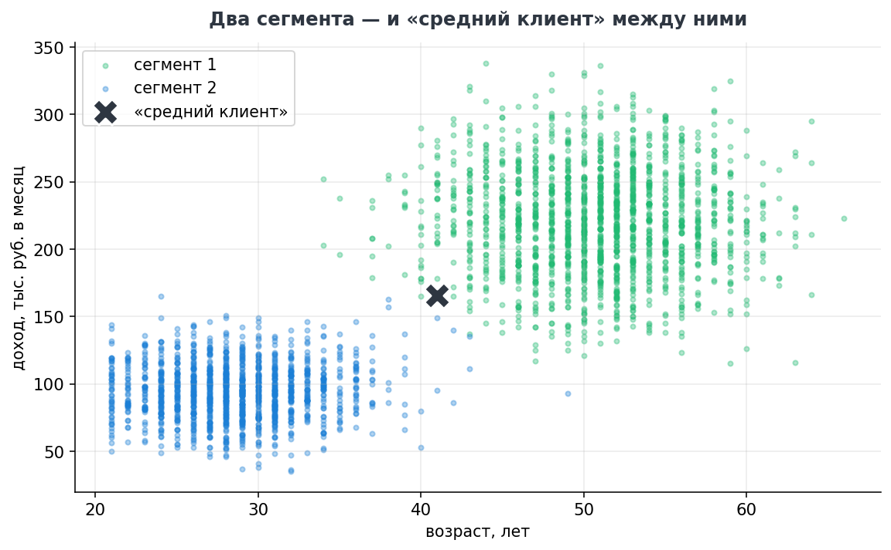
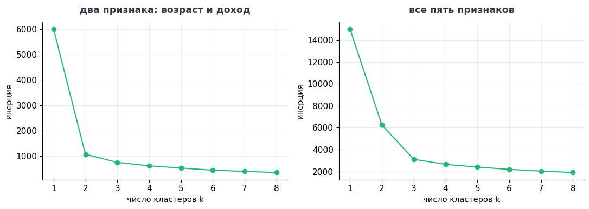
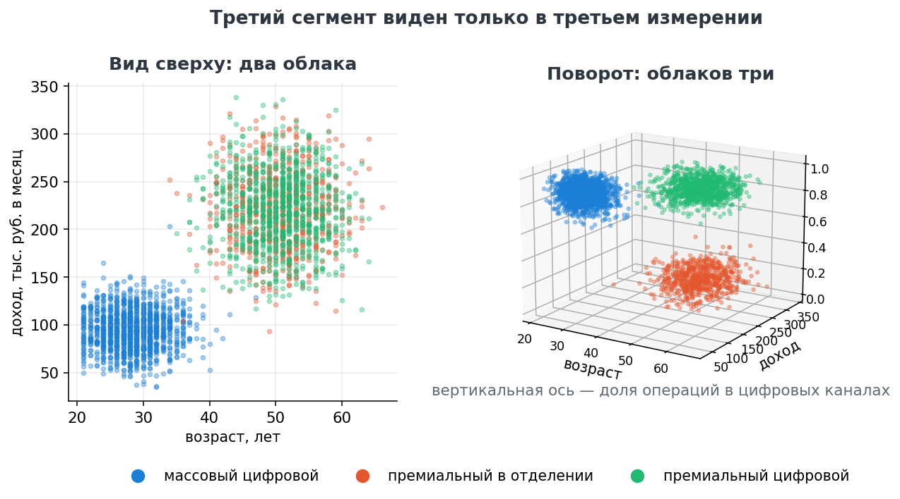

Ассистент пишет код, код переносится в тетрадь и выполняется на своих данных. Приёмка строже, чем в предыдущем кейсе: исполняемый код ошибается тише готовой страницы.
Каким сегментам адресовать предложение и почему «средний клиент» — не сегмент?
Данные — выборка из clients_sample.csv: 3 000 клиентов, пять признаков — возраст, доход, средний остаток, число операций в месяц и доля операций в цифровых каналах. Тетрадь целиком — 3.3.3_кластеризация.ipynb; стенд поднимается по инструкции установки.
В запросе описаны структура файла и семь шагов работы — от описательной статистики до профилей сегментов. Данные, как и в предыдущем кейсе, не передаются.
Ты — ассистент руководителя, который готовит сегментацию клиентской базы. Напиши код на Python для Jupyter-тетради. Данные: файл data/clients/clients_sample.csv, кодировка UTF-8, разделитель — точка с запятой, десятичный знак — запятая. Колонки: id_клиента; возраст; доход_тыс_руб; средний_остаток_тыс_руб; операций_в_месяц; доля_цифровых_операций. 3000 строк, пропусков нет. Задача — сегментация методом K-means: 1. Загрузить данные, показать описательную статистику и средние значения по всей базе. 2. Нормировать признаки перед кластеризацией и объяснить в комментарии, зачем это нужно. 3. Выбрать число кластеров методом локтя: график инерции для k от 1 до 8. 4. Построить кластеризацию по двум признакам — возраст и доход. Диаграмма рассеяния с цветами кластеров, центры кластеров и среднее по всей базе отмечены крестами. 5. Построить кластеризацию по всем пяти признакам и показать интерактивный трёхмерный график в plotly: оси — возраст, доход, доля цифровых операций; цвет — кластер; график можно вращать мышью. 6. Вывести профиль каждого кластера: средние значения признаков и численность. Код разбей на пронумерованные ячейки с короткими комментариями. Библиотеки: pandas, scikit-learn, matplotlib, plotly. Ответ — только код ячеек с заголовками-комментариями, без пояснений вокруг.
Ячейки вставляются в тетрадь по порядку. Restart Kernel и Run All — код должен выполняться от начала до конца без вмешательства.
Проверяется не только то, что код выполнился, но и то, что он посчитал именно заказанное: те ли признаки участвуют в расчёте, обосновано ли число сегментов, приведены ли признаки к одному масштабу.
Смотрим не на код, а на профили сегментов и на то, какое решение из них следует.
Средний возраст — 41 год, средний доход — 167 тысяч рублей. В окрестность этого портрета попадает менее двух процентов выборки: кампания, рассчитанная на средние значения, обращается к аудитории, которой почти не существует.

Метод локтя на двух признаках указывает на два сегмента, на всех пяти — на три. Разница видна, только если добавить к плоскости третью ось — долю операций в цифровых каналах. Как устроен сам алгоритм k средних, зачем признаки приводятся к одному масштабу и что откладывается на графике локтя — в разделе «Кластеризация» математических основ.


Слева верхнее облако выглядит однородным: два премиальных сегмента лежат друг на друге, потому что по возрасту (51 год), доходу (220 тыс.) и остатку они совпадают. Справа то же облако распадается на два слоя — их разделяет не размер кошелька, а способ обслуживания.
В тетради график интерактивный: кнопки «Вид сверху» и «Повернуть» переставляют камеру, а мышью его можно вращать свободно. Начинать стоит с вида сверху — с картины, которую все и ожидают увидеть, — и поворачивать уже после того, как прозвучал вывод о двух сегментах.
Центроид — средний клиент своей группы. В отличие от среднего по всей базе, он описывает клиента, который в базе действительно есть.
| Сегмент | Возраст | Доход, тыс. руб. | Операций в месяц | Доля цифровых | Доля базы |
|---|---|---|---|---|---|
| Массовый цифровой | 28 | 95 | 46 | 0,86 | 43 % |
| Премиальный в отделении | 51 | 220 | 12 | 0,19 | 23 % |
| Премиальный цифровой | 51 | 220 | 41 | 0,87 | 33 % |
| Вся база — «средний клиент» | 41 | 166 | 36 | 0,70 | 100 % |
Два премиальных центроида различаются по двум признакам из пяти: числу операций и доле цифровых. По возрасту, доходу и остатку они совпадают — именно поэтому на плоскости они и не разделялись.
| Сегмент | Портрет | Как обращаться |
|---|---|---|
| Массовый цифровой | 28 лет, доход 95 тыс., остаток 120 тыс., 46 операций в месяц, 86 % из них в приложении | уведомление в приложении и лента предложений: контакт почти ничего не стоит, но и внимания получает мало |
| Премиальный в отделении | 51 год, доход 220 тыс., остаток 1,6 млн, 12 операций в месяц, 19 % в цифровых каналах | персональный менеджер, звонок, встреча в офисе: контакт дорогой, зато результативный |
| Премиальный цифровой | 51 год, доход 220 тыс., остаток 1,6 млн, 41 операция в месяц, 87 % в цифровых каналах | цифровые каналы с премиальным содержанием: тот же продукт, что и предыдущему сегменту, другим способом |
Два последних сегмента — одинаковые по деньгам клиенты, которых до сих пор обслуживали как одну группу. Разделение даёт две вещи сразу: премиальное предложение перестаёт теряться в общей рассылке, а расходы на персональные контакты не тратятся на тех, кто предпочитает приложение.
Управленческое следствие. Одно и то же предложение адресуется трём сегментам по-разному, и стоимость контакта различается на порядок. Рассылка «по среднему клиенту» оплачивает контакты со всеми тремя, а составлена ни для одного из них.
Проверяется сегментация не красотой графика, а откликом: выросла ли конверсия и снизилась ли стоимость отклика после разделения. И пересчитывается на свежих данных — клиенты переходят между сегментами, а разбиение из прошлогодней презентации этого не знает.
Границы сегментов зависят от набора признаков и числа кластеров: сегментация — инструмент адресности, а не основание для решений в отношении клиента. Признаки, которые не имеют права влиять на предложение, в расчёт не включаются.